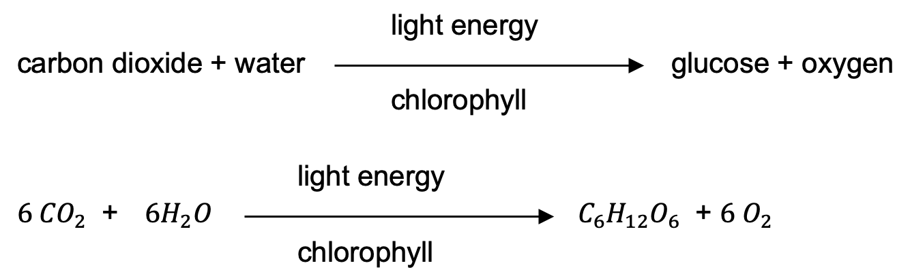
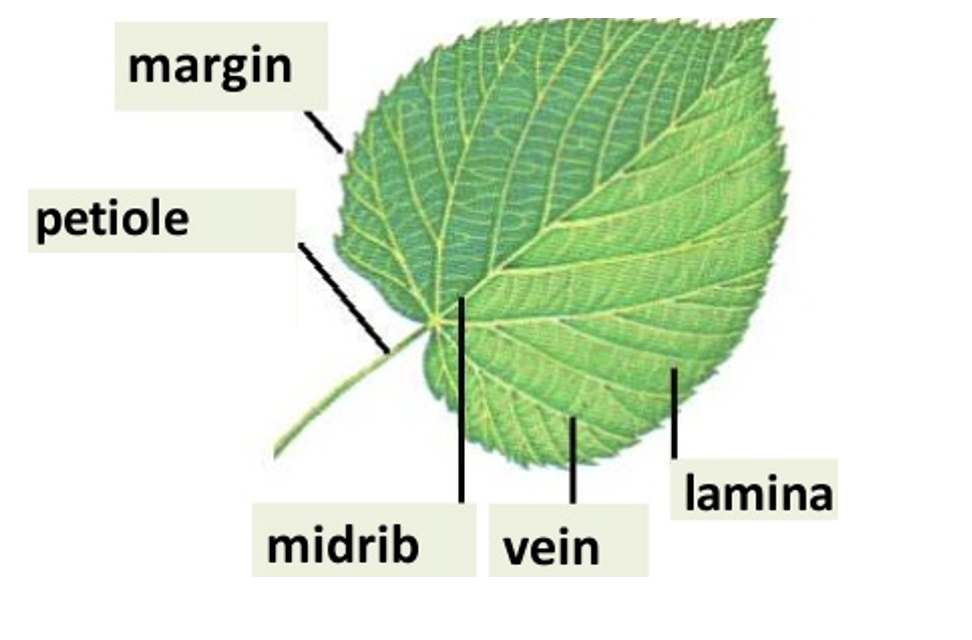
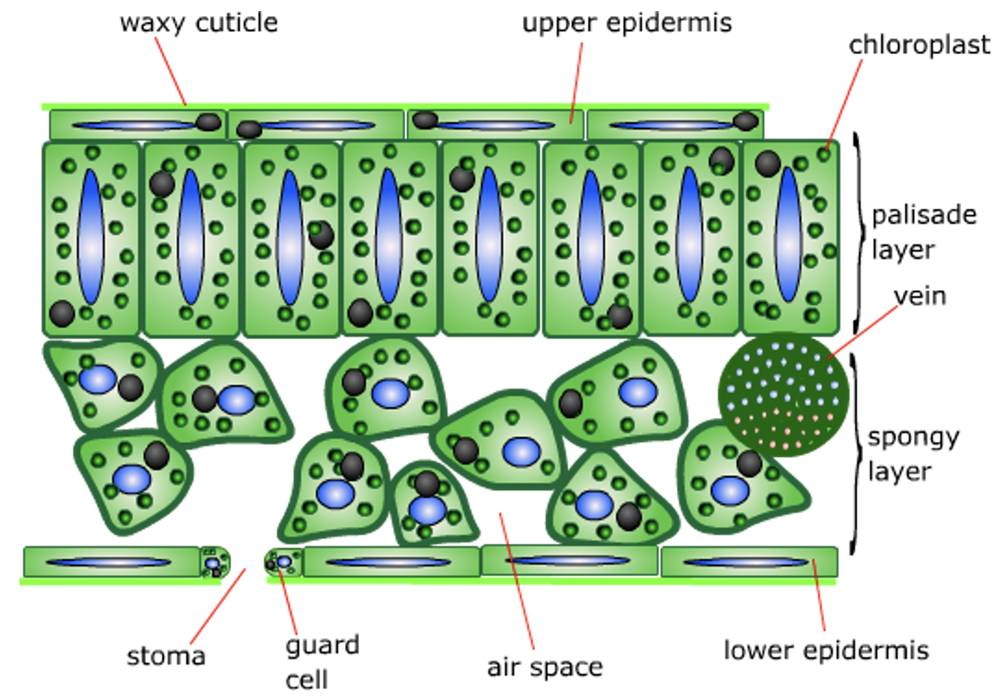

Plant Nutrition
Author: Ms. Joey Lie (EI)
- Green plants make their own food by using simple inorganic substances – carbon dioxide, water and minerals from the air and soil.
- Plants are autotrophic (self – feeding) – they take simple substances from their environmnet and use light energy to build them into complex food compounds.
- The building up of complex molecules from simpler substances (synthesis) requires energy and enzymes. The enzymes are in the plant’s cell, and the energy comes from sunlight. The process is therefore called photosynthesis : basic process by which plants manufacture carbohydrates from raw materials using energy from light.
- Plants can absorb and use light energy because they have a green pigment, chlorophyll, contained in chloroplasts in some of their cells. 
- Some of the glucose produced is stored in the plant cells as starch
- Leaves are adapted to allow photosynthesis to take place as quickly and efficiently 
- Epidermis
- These cells do not contain chloroplast.
- Their function is to protect inner layers of cells in the leaf.
- The cells of upper epidermis often secrete a waxy substance, called the cuticle, and it helps to stop water evaporating from the leaf.
- There are small openings called stomata in the lower epidermis.
- Mesophyll
- The cells all contain chloroplasts.
- The cell nearer to the top of the leaf are arranged like a fence or palisade, and they form palisade layer.
- The cell beneath them are rounder, and arranged quite loosely, with large are spaces between them. They form spongy layer.
- Running through the mesophyll layer are veins or vascular bundles. Each vein contains large, thick – walled xylem vessels for carrying water and smaller, thin – walled phloem tubes for carrying away sucrose and other substances that the leaf has made.
- Stomata
- Each stomata is surrounded by a pair of sausage - shaped guard cells which can open or close the hole
- Guard cells contain chloroplast
A leaf consists of a broad, flat part called lamina, which joined to the rest of the plant by a leaf stalk or petiole. Running through the petiole are vascular bundles, which then form the veins in the leaf. These contain tubes which carry substances to and from the leaf.
A leaf is made up of several layers:
Leaf Adaptations
Leaf are adapted to obtain carbon dioxide, water and sunlight.
Carbon dioxide
The leaf is held out into the air by the stem and the leaf stalk, and its large surface area helps to expose it to as much air as possible. The cells which need the carbon dioxide are the mesophyll cells, inside the leaf. The carbon dioxide get into the leaf through the stomata by diffusion. Behind each stomata is an air space which connects up with other air spaces between the spongy mesophyll cells. The carbon dioxide can therefore diffuse to all the cells in the leaf.
Water
Water from the soil is absorbed by the root hairs, and carried up to the leaf in the xylem vessels. It then travel from the xylem vessels to the mesophyll cells by osmosis.
Sunlight
The position of a leaf and its broad, flat surface help it to obtain as much sunlight as possible.
The cells that need the sunlight are the mesophyll cells. The thickness of the leaf allow the sunlight to penetrate right through it, and reach all the cells. To help this, the epidermal cells are transparent, with no chloroplast.
Glucose In Plants
Used for energy
All cells need energy. Glucose which a leaf makes will be broken down by respiration to release energy.
Stored as starch
Glucose may be turned into starch and stored in the leaf. Glucose is simple sugar, soluble in water and quite a reactive substance. Therefore, it is not a very good storage molecule. Starch is polysaccharide, not very reactive, not very soluble and can be made into granules which can be easily stored inside the chloroplasts
Used to make proteins and other organic substances
The plant can use glucose as a starting point for making all the other organic substances it needs, include sucrose and cellulose. Plant can use the sugar they have made in photosynthesis to make amino acids, which can build up into proteins. They absorb nitrate ions from the soil through their root hairs, by diffusion and active transport. The nitrate ions combine with glucose to make amino acids and then form protein molecules. Magnesium from soil is to make chloroplyll.
The Importance Of Photosynthesis - Photosyntesis is the basic reaction which brings the energy of the Sun into ecosystems. It is essential for maintaining a constant global level of oxygen and carbon dioxide.
Minerals Needed
| Element | Nitrogen | Magnesium |
|---|---|---|
| Mineral salt | Nitrates or ammonium ions | Magnesium ions |
| Why Needed | To make proteins | To make chlorophyll |
| Deficiency | Weak growth, yellow leaves | Yellowing between vein of leaves |
Sucrose For Transport
Glucose is converted to the complex sugar sucrose to be transported to other parts of the plant. They dissolve in the sap in the phloem vessels, and can be distributed to whichever part of the plant need them. The sucrose may later be turned back into glucose again, to be broken down to release energy or turned into starch and stored.
Testing For Starch
Iodine solution is used to test for starch. A blue – black colour shows that starch is present. Before testing a leaf for starch, the cell membranes are first broken down by boiling water – so the iodine solution can reach the starch – and the chlorophyll is removed by dissolving it with alcohol – to get rid of the green colour.
Limiting Factor
Sunlight
As light intensity increases, the rate of photosynthesis will increase until the plant is photosynthesising as fast as it can. At this point, even the light become brighter, the plant cannot photosynthesise any faster.
Carbon dioxide
The more carbon dioxide a plant is given, the faster it can photosynthesise up to a point, but then a maximum is reached.
Temperature
A plant can photosynthesis faster on a warm day. On a really hot day photosynthesis may slow down because stomata often close if the weather is very hot and sunny to prevent too much water being lost.
Growing Crops In Glasshouses
If crops are grown in glasshouses, it is possible to control the conditions so that they are photosynthesising as fast as possible.